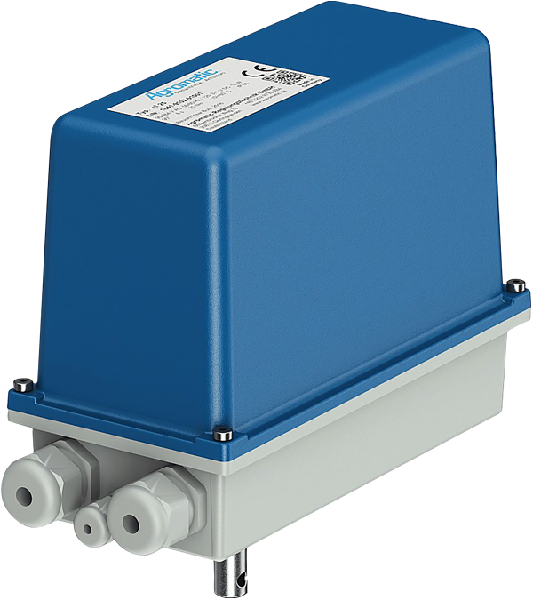

kompakt
nT 25 Schwenkantrieb
Kompakter elektrischer Schwenkantrieb für kleinere Armaturen und Stellaufgaben mit BLDC-Motor.
- Drehmoment
- 25 Nm, optional 60 Nm
- Stellbereich
- 0°–300°
- Stellzeit 90°
- 6–60 s
- Spannung
- 90–264 V AC, 120–370 V DC, 24 V DC
- Schutzart
- IP66
- Temperatur
- 0 °C bis +60 °C, mit Heizung -15 °C bis +60 °C